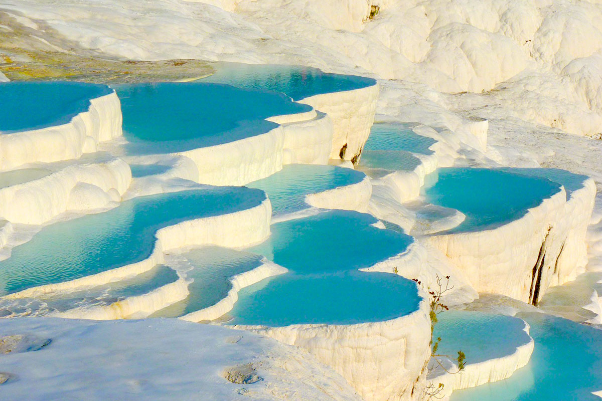
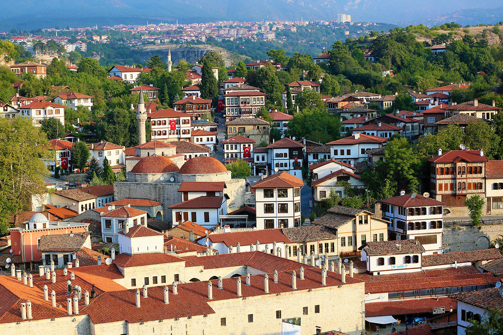

蕃紅花城
於1994年被聯合國教科文組織評選為「人類文化遺產城市」的蕃紅花城。依山而建的蕃紅花城，有著典型的木造大宅院及石板舖成的街道，保存有大約八百棟土耳其最精緻的十九世紀俄圖曼房屋，宛若一個時光樣本；漫步在蕃紅花城沿著山坡起伏的狹窄古老巷弄內，細細品味此地動輒數百年的老房子，感受那鄂圖曼大帝國昔日的榮光。

棉堡
CottonCastle之稱，潔白有如棉花築成的堡壘的奇特自然地形，係由地底下溫泉流過含有鈣質成分的石灰岩層，富鈣質的溫泉冒出地表後，白色的鈣質沉澱在地表上所形成的，經年累月的堆積，形成粉白色棉花狀的岩崖。

熱氣球升空體驗
來土耳其的遊客絕不能錯過卡帕多奇亞這塊奇岩怪石之地，這裡因百萬年前的火山運動造就這個特殊的地形風景和悠久的歷史傳奇，在這裡那麼多奇岩怪石無法一次用雙腳走完，所以搭熱氣球一次由上往下鳥瞰整片大地才是精彩，這邊的氣候是發展熱氣球飛行的絕佳條件，一年幾乎有300天都是適合熱氣球飛行的天氣，但還是會遇到天候狀況不佳的時候啦！